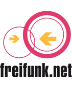

Introducción a LibreMesh
LibreMesh es un framework modular para crear firmwares basados en OpenWrt para nodos wireless mesh. Varias comunidades de todo el mundo usan LibreMesh como base para sus redes comunitarias.
El proyecto LibreMesh incluye el desarrollo de varias herramientas. El firmware (la pieza principal) permite un simple despliegue de redes de malla de múltiples radios, autoconfigurables pero versátiles.
|
Revisa Cómo funciona para ver las ideas básicas de la arquitectura. Visita Get it para saber cómo empezar a usarlo. Lee algo de Documentación para entender mejor cómo funciona. Y únete a nosotros en el listas de correo para seguir las discusiones actuales. |
Redes Mesh
Las redes de mesh o malla son aquellas en las que todos los participantes (nodos) pueden rutear (encaminar)
el tráfico de otros participantes.
Así que no hay puntos centrales y la topología física puede ser completamente aleatoria.
 Por lo general, las redes de malla están descentralizadas, organizadas desde las bases, desplegadas
y mantenidas por las personas que las utilizan.
Creemos que esta es la única manera de lograr una verdadera red libre de
control de los gobiernos y las empresas mundiales.
Por lo general, las redes de malla están descentralizadas, organizadas desde las bases, desplegadas
y mantenidas por las personas que las utilizan.
Creemos que esta es la única manera de lograr una verdadera red libre de
control de los gobiernos y las empresas mundiales.
Redes Libres para una sociedad libre
Entendemos que una red libre como una red de telecomunicaciones debe cumplir estos tres puntos:
-
Ser abierta, así que cualquiera puede conectarse a ella si es físicamente posible
-
Ser neutral, por lo que no hay preferencias por el tipo, origen o destino de los datos
-
Ser libre como en la libertad
En la siguiente lista intentamos recopilar algunas redes libres existentes (envíanos un e-mail si quieres incluir la tuya):
AlterMundi |
Argentina |
|
|
Guifi.net |
Península ibérica |
|
|
FreiFunk |
Alemania |
 |
|
FunkFeuer |
Austria |
|
|
Ninux.org |
Italia |
|
Firmware y dispositivos embebidos
Un dispositivo embebido es una pequeña computadora.
An embedded device is a small computer. Normalmente el sistema operativo que se ejecuta en ordenadores
tan pequeños se llama Firmware. Nuestra forma de desplegar redes libres es instalando nuestro propio
firmware a los dispositivos (normalmente routers WiFi).
 Nuestro sistema se basa en el proyecto OpenWrt, que a su vez se basa en el conocido sistema operativo Linux.
Todo lo que desarrollamos es software libre para una sociedad libre para que cualquiera pueda
usar, copiar, modificar y distribuir de acuerdo con la
licencia AGPL.
Nuestro sistema se basa en el proyecto OpenWrt, que a su vez se basa en el conocido sistema operativo Linux.
Todo lo que desarrollamos es software libre para una sociedad libre para que cualquiera pueda
usar, copiar, modificar y distribuir de acuerdo con la
licencia AGPL.
Historia
El proyecto LibreMesh (LiMe) se inició en 2013 por un conjunto de activistas de las redes libres de varias culturas y diferentes proyectos en todo el mundo, dispuestos a crear una solución común para el despliegue de redes libres.
In 2017 Shuttleworth Foundation awarded us with a
Flash Grant